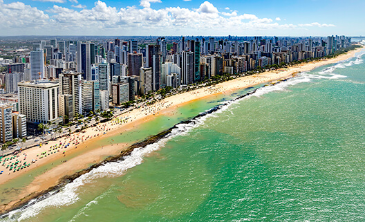

Bem vindo a Praia da Boa Viagem
Com oito quilômetros de orla, a praia de Boa Viagem oferece um mar tranquilo repleto de piscinas naturais de águas mornas formadas pelos arrecifes. Seus arrecifes integram a seleta lista dos sítios geológicos brasileiros e, suas águas e areias, permanentemente monitoradas pelo CPRH (Agência Estadual de Meio Ambiente e Recursos Hídricos), são livres de poluição. A orla apresenta calçamento em concreto intertravado, facilitando o deslocamento de cadeirantes. A praia também apresenta semáforos com aviso sonoro em alguns pontos.
Texto extraído do site Clique aqui